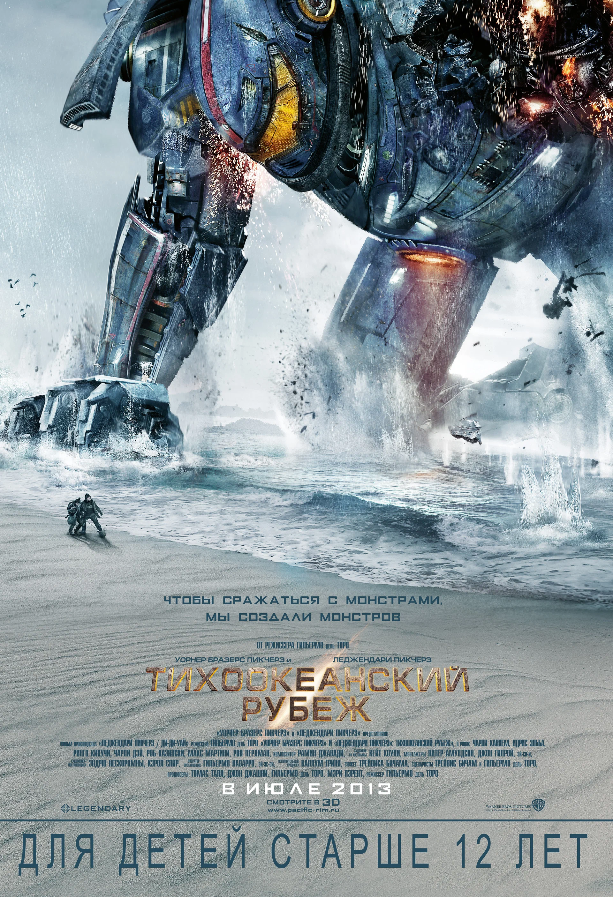
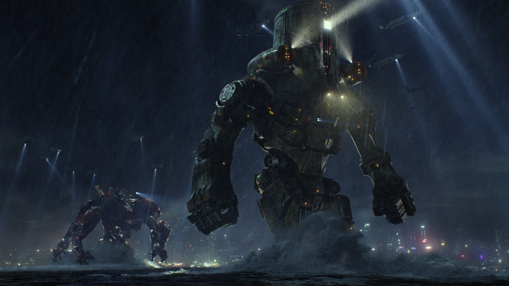
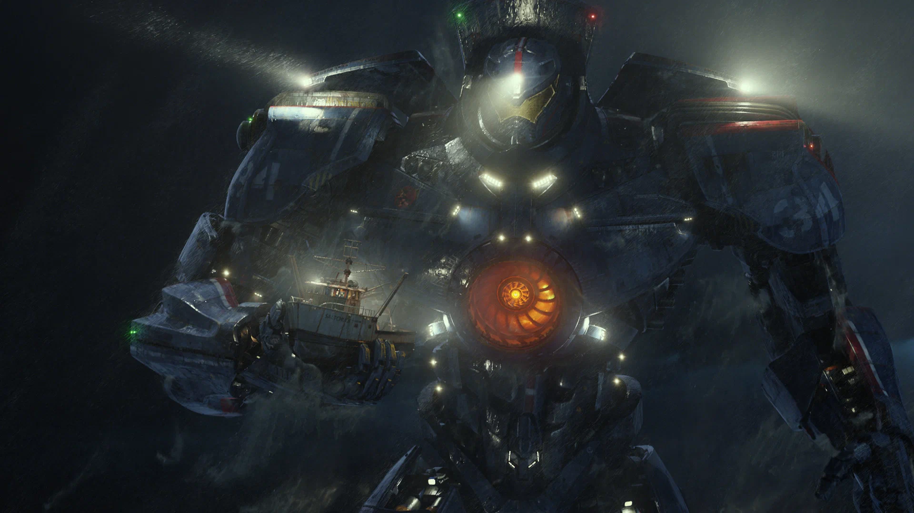
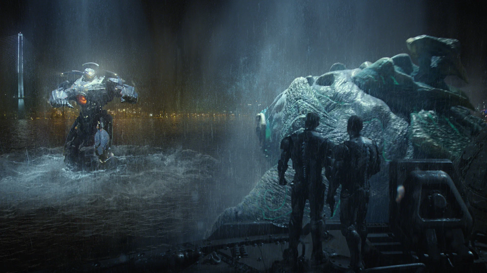

<!DOCTYPE html>
<html>
<head>
    <meta charset="utf-8">
    <link rel="stylesheet" href="style.css">
	<title>Тихокеанский рубеж</title>
</html>
<body>
    <header>
        <h1 class="heading">фильм  "Тихоокеанский рубеж"</h1>
    </header>
    <main>
        <section>
        <a href="https://rutube.ru/video/e459fde7298250c0856d1b45c89aa2e7/">
            
        </a>
        <h2 class="title">О фильме</h2>
        <est>
            <p class="reiting"><b>7.0</b></p>
        </est>
        <div id="info">
            <p>Год производства</p>
            <p>Дата премьеры</p>
            <p>Время</p>
            <p>Возраст</p>
            <p>Страна</p>
        </div>
        <div id="info_two">
            <p>2013</p>
            <p>3 марта 2021</p>
            <p>2 ч. 11 мин.</p>
            <p>12+</p>
            <p>США, Мексика</p>
        </div>
        <ul>
            <p class="reiting"><b>Жанры</b></p>
            <li>Фантастика</li>
            <li>Боевик</li>
            <li>Приключения</li>
        </ul>
        <figure>
            <h2 style="color: #000000; padding: 2% 0;">Кадры из фильма</h2>
            <div id="Film">
                
                
                
            </div>
        </figure>
        <div id="description">
            <p>
                Когда из морских глубин поднялись легионы чудовищ, известных как кайдзю, началась война, которой
                суждено было забрать миллионы жизней и свести «человеческие ресурсы» почти к нулю всего за несколько
                лет. Чтобы сражаться с пришельцами, было создано специальное оружие: огромные роботы, названные егерями,
                они управлялись одновременно двумя пилотами, чьи сознания соединены с помощью нейронной связи. Но даже
                егеря оказываются почти бессильны перед лицом безжалостных кайдзю. На грани поражения у защитников
                человечества нет выбора, кроме как обратиться к двум весьма сомнительным героям – никому не нужному
                бывшему пилоту и неопытному стажеру – которые объединились, чтобы повести в бой некогда легендарного,
                но сейчас устаревшего егеря. Вместе они оказываются единственной надеждой человечества, последним
                препятствием перед надвигающимся апокалипсисом.
            </p>
        </div>
        <Actors>
            <nav><a class="page" href="actors.html">Режиссер -></a></nav>
        </Actors>
        <copy>
            <h3>&copy; Desing by Буйновский Юрий Дмитриевич</h3>
        </copy>